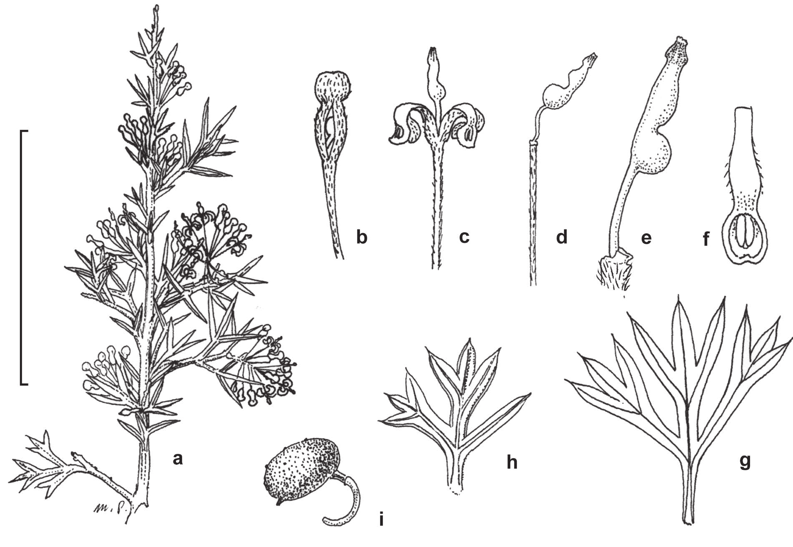
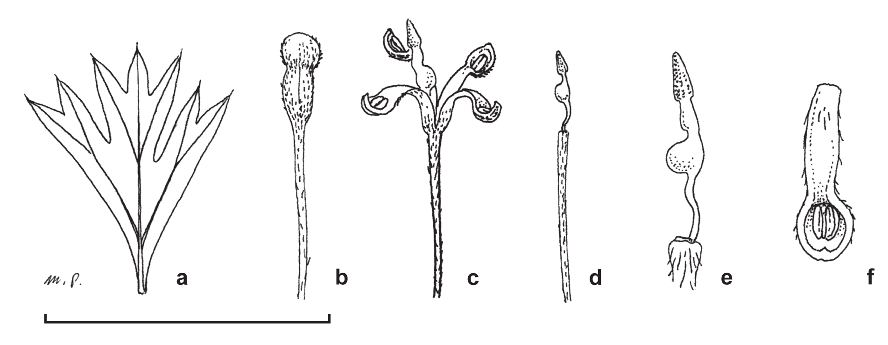

Grevillea trichantha, a third species with hairy flowers in the Triloba Group (Proteaceae: Grevilleoideae: Hakeinae) from the Marchagee Track, south-west Western Australia
Full text is available as a scanned copy of the original print version.
Get a printable copy (PDF file) of the
complete article, or click on a page image below to browse page by page.
Links are also available for
Selected References.
Images in this article
Fig. 1 a. Flowering branchlet of Grevillea trichantha. b. New growth of Grevillea trichantha. c. Grevillea trichantha in natural habitat. Photos: a, c by P.M. Olde; b by I. Gilmour.

Fig. 2 Grevillea trichantha. a. Habit. b. Flower bud before anthesis. c. Flower after anthesis. d. Flower without perianth. e. pistil. f. Tepal inner surface. g, h. Leaf variants. i. Follicle. Scale bar: a = 50 mm; b, c = 12.5 mm; d = 10 mm; e, f. = 5 mm; g, h = 25 mm; i = 33 mm. Illustration: M. Pieroni; modified for publication by L. Elkan.

Fig. 3 Grevillea metamorpha. a. Leaf. b. Flower bud before anthesis. c. Flower after anthesis. d. Flower without perianth. e. Pistil. f. Tepal inner surface. Scale bar: a = 25 mm; b, c, d = 12.5 mm; e, f. = 6.25 mm. Illustration: M. Pieroni; modified for publication by L. Elkan.